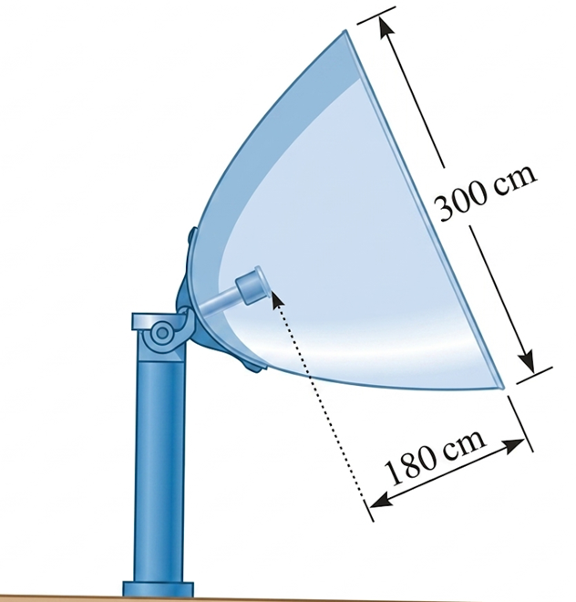
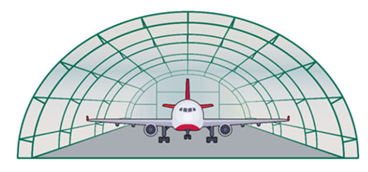

Học liệu tương tác: Mô hình hoá với ba đường conic
Elip, hypebol, parabol trong các bài toán thực tế lớp 10
Bài toán 1.
Một sân vận động hình elip có độ dài trục lớn \(AA' = 80\,m\), độ dài trục bé \(BB' = 60\,m\). Người ta muốn xây dựng một sân bóng đá dạng hình chữ nhật nội tiếp elip. Hãy tính diện tích lớn nhất của hình chữ nhật đó.
Một sân vận động hình elip có độ dài trục lớn \(AA' = 80\,m\), độ dài trục bé \(BB' = 60\,m\). Người ta muốn xây dựng một sân bóng đá dạng hình chữ nhật nội tiếp elip. Hãy tính diện tích lớn nhất của hình chữ nhật đó.
Bài toán 2.
Một cột trụ có mặt cắt là một hypebol, chiều cao \(6\,m\), chỗ nhỏ nhất ở chính giữa rộng \(0{,}8\,m\), còn đỉnh và đáy đều rộng \(1\,m\). Tính độ rộng của cột ở độ cao \(5\,m\).
Một cột trụ có mặt cắt là một hypebol, chiều cao \(6\,m\), chỗ nhỏ nhất ở chính giữa rộng \(0{,}8\,m\), còn đỉnh và đáy đều rộng \(1\,m\). Tính độ rộng của cột ở độ cao \(5\,m\).
Bài toán 3.
Một toà tháp có mặt cắt là một hypebol, chiều cao \(200\,m\), chỗ nhỏ nhất ở chính giữa rộng \(50\,m\), còn đỉnh và đáy đều rộng \(60\,m\). Tính độ rộng của toà tháp ở độ cao \(150\,m\).
Một toà tháp có mặt cắt là một hypebol, chiều cao \(200\,m\), chỗ nhỏ nhất ở chính giữa rộng \(50\,m\), còn đỉnh và đáy đều rộng \(60\,m\). Tính độ rộng của toà tháp ở độ cao \(150\,m\).
Bài toán 4.
Một angten vệ tinh có mặt cắt là một parabol, đường kính miệng angten \(300\,cm\), khoảng cách từ đầu thu đến miệng angten là \(180\,cm\). Hãy tính khoảng cách từ đầu thu đến đỉnh angten.
Một angten vệ tinh có mặt cắt là một parabol, đường kính miệng angten \(300\,cm\), khoảng cách từ đầu thu đến miệng angten là \(180\,cm\). Hãy tính khoảng cách từ đầu thu đến đỉnh angten.

Bài toán 5.
Một nhà vòm chứa máy bay có mặt cắt là nửa elip cao \(10\,m\) và rộng \(24\,m\). Tính khoảng cách theo phương thẳng đứng từ một điểm cách chân tường \(6\,m\) lên tới mái vòm, tức là độ cao của mái ở vị trí đó.
Một nhà vòm chứa máy bay có mặt cắt là nửa elip cao \(10\,m\) và rộng \(24\,m\). Tính khoảng cách theo phương thẳng đứng từ một điểm cách chân tường \(6\,m\) lên tới mái vòm, tức là độ cao của mái ở vị trí đó.

Bài toán 6.
Trong một đường chuyền bóng, quả bóng rời tay An tại \(A\), đến tay Bình tại \(B\), và chuyển động theo một parabol. Biết \(OA = BH = 1{,}7\,m\), \(CK = 3{,}4625\,m\), \(OK = 2{,}5\,m\), \(OH = 10\,m\). Hãy xác định độ cao lớn nhất của quả bóng so với mặt đất.
Trong một đường chuyền bóng, quả bóng rời tay An tại \(A\), đến tay Bình tại \(B\), và chuyển động theo một parabol. Biết \(OA = BH = 1{,}7\,m\), \(CK = 3{,}4625\,m\), \(OK = 2{,}5\,m\), \(OH = 10\,m\). Hãy xác định độ cao lớn nhất của quả bóng so với mặt đất.
Bài toán 7.
Trên bản đồ quy hoạch (hệ trục \(Oxy\), 1 đơn vị tọa độ \(=1\,m\) thực tế), ranh giới một khu rừng sinh thái là đường tròn \(x^2+y^2-1000x-800y+400000=0\). Ban quản lý dự định mở con đường mòn du lịch đi thẳng xuyên qua khu rừng, tuyến đường nằm trên đường thẳng \(\Delta:\ 3x+4y-3040=0\). Chi phí rải đá dăm là \(850\,000\) đồng cho mỗi mét chiều dài. Hỏi tổng chi phí rải đá cho đoạn đường nằm phía trong khu rừng là bao nhiêu triệu đồng (làm tròn đến hàng đơn vị)?
Trên bản đồ quy hoạch (hệ trục \(Oxy\), 1 đơn vị tọa độ \(=1\,m\) thực tế), ranh giới một khu rừng sinh thái là đường tròn \(x^2+y^2-1000x-800y+400000=0\). Ban quản lý dự định mở con đường mòn du lịch đi thẳng xuyên qua khu rừng, tuyến đường nằm trên đường thẳng \(\Delta:\ 3x+4y-3040=0\). Chi phí rải đá dăm là \(850\,000\) đồng cho mỗi mét chiều dài. Hỏi tổng chi phí rải đá cho đoạn đường nằm phía trong khu rừng là bao nhiêu triệu đồng (làm tròn đến hàng đơn vị)?